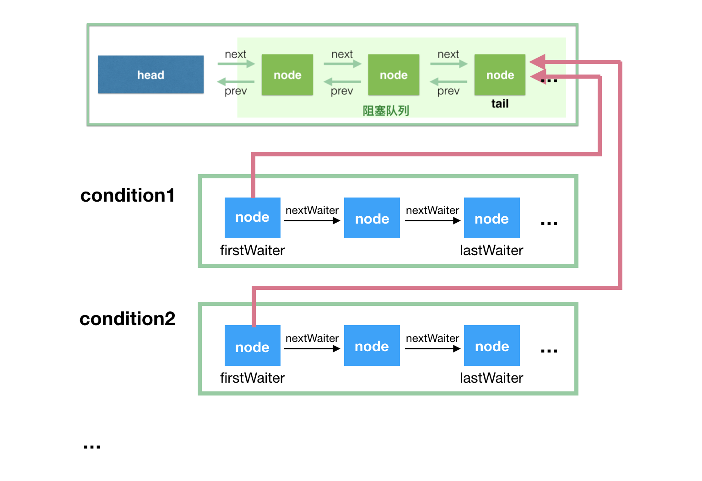

AQS
AQS 提供一个框架，用于实现依赖于先进先出（FIFO）等待队列 的阻塞锁和相关同步器（信号量，事件等）。对于大多数依赖单个原子 int 值表示状态的同步器，该类可以作为十分有用的基类。子类必须定义所有的protected方法（包括tryAcquire、tryRelease），来改变这个状态，并且定义哪些状态代表来对象被使用和被释放。鉴于这些，该类中其他的方法用来实现队列和阻塞的机制。子类可以维护其他状态字段，但是只有使用 getState 、setState以及 compareAndSetState 来原子的操作状态值。
子类需要定义非 public 的内部工具类用于实现其内部类的同步属性。AbstractQueuedSynchronizer 类不实现任何同步接口，相反，它定义了诸如acquireInterruptibly之类的方法，可以被具体的锁和相关的同步器适当地调用，以实现它们的公共方法。
该类支持默认的独占模式和共享模式。当一个线程处在独占模式下，其他试图 acquire 的线程都无法成功。共享模式可以同时被多个线程 acquire成功。在具体的应用场景中该类无法理解这些区别，当共享模式 acquire 成功之后，下一个线程（如果有一个存在）必须判定是否能够acquire。线程等待在不同的模式里但是会共享同一个FIFO队列。通常来说，子类只需要支持其中一种模式，但是如果都支持，可以参照ReadWriteLock。子类不需要定义不支持模式的方法。
该类定义AbstractQueuedSynchronizer.ConditionObject内部类，可以被子类使用的 Condition 实现，来支持独占模式 isHeldExclusively 判定当前线程的同步是否是独占模式，可用通过release方法与 getState 方法来完全释放当前对象，在将保存的状态值调用acquire，最终将此对象恢复到其先前获取的状态。AbstractQueuedSynchronizer没有方法来创建 Condition，所以如果无法满足这个约束，则不要使用它。AbstractQueuedSynchronizer.ConditionObject 的行为与具体的同步器实现有关。
该类为内部队列提供检查，检测和监视方法，以及 在condition objects上的类似方法。 这些方法可以根据需要使用 AbstractQueuedSynchronizer 用于它们的同步机制。该类的序列化仅存储 atomic int 的状态值，因此反序列化对象的线程队列为空。
使用
为了使用该类去创建一个同步器，需要重新定义以下方法，并使用 getState, setState, compareAndSetState 方法来改变同步状态。
- tryAcquire
- tryRelease
- tryAcquireShared
- tryReleaseShared
- isHeldExclusively
上述所有方法默认实现都会抛出 UnsupportedOperationException。这个方法的具体实现必须保证内部的线程安全，并且应该快速并且不会阻塞。所有其他方法均为 final，因为他们不能独立变化。
You may also find the inherited methods from AbstractOwnableSynchronizer useful to keep track of the thread owning an exclusive synchronizer. You are encouraged to use them -- this enables monitoring and diagnostic tools to assist users in determining which threads hold locks.
也许你发现一些继承自 AbstractOwnableSynchronizer 的方法非常有助于线程保持拥有其独占同步器。同时我们也鼓励使用他们，有助于监控和诊断工具判定哪些线程持有来锁。
ReentrantLock
公平锁相比与非公平锁在
tryAcquire中会多判定一个hasQueuedPredecessors，如果为false（队列头为当前线程--已获取锁 or 队列为空）并且成功修改状态值，则可以认为获取锁成功，这样才是重入，不然加到队尾就会有麻烦。
ReentrantLock 中通过两个子类 FairSync 和 NoFairSync 继承 AQS 来实现锁。在Lock方法中，直接调用 AQS 的 acquire，acquire会调用 NoFairSync 中的tryAcquire来尝试让当前线程直接获取锁。如果失败则会创建链表节点，将当前线程加入队列，并park。当release方法被调用后，会寻找队列下一个节点进行 unpark，这样他就有机会在acquireQueued中获取锁。
公平和非公平就体现在
tryAcquire方法中，FairSync会判定当前线程是否已获取锁 or 队列为空，在这样的情况下才会尝试获取锁。而NoFairSync会直接来获取锁。
Condition
Condition 因子将 Object monitor 方法（wait, notify and notifyAll）拆分为不同的对象，通过将它们与 Lock 相结合来实现每个对象具有多个等待集的效果。任何 Lock 可以替代 synchronized 关键字的地方，都可以用Condition 来替换Object monitor 方法。
Conditions（也称为 条件队列 或者 条件变量）提供了一种方法 -- 让线程暂停执行，直到其他线程基于某种条件唤醒。在多个线程中访问一些共享的状态信息，是需要进行保护的，所以 Lock 与 Condition 有某种形式的关联。Condition提供的关键属性是它以原子方式释放关联的锁并挂起当前线程，就像Object.wait一样。
Condition 本质上是绑定到 Lock。可以通过 Lock.newCondition() 来获取一个 Condition 实例。
Condition 的实现可以提供相比于 Object monitor方法不一样的行为和语义，比如：被通知调起的顺序、在通知时不需要持有锁。如果实现类提供了不一样的语义，必须在文档中进行说明。
Condition 实例只是普通的对象，可以用在同步语句中，并且有他们自己的 Object monitor的wait和 notification 方法。获取 Condition 对象的 Object monitor 或者使用其 monitor 方法，与Lock 中使用 Condition 的 wait 或者 signal 方法没有任何关系。为了避免混淆，不建议使用 Condition 的 Object monitor 方法，除非在它自己的实现里。
实现类需要注意
- 虚假唤醒（
spurious wakeup）：开发者最好将条件wait方法放在循环中 Condition有3中wait形式（interruptible, non-interruptible, and timed），在不同平台的底层实现可能不同。因此，不需要对三种wait定义一致的语义，也不需要支持中断形式的线程暂停。
AbstractQueuedSynchronizer.ConditionObject
/** First node of condition queue. */
private transient Node firstWaiter;
/** Last node of condition queue. */
private transient Node lastWaiter;
在 ConditionObject 的内部维护了一个队列：条件队列，与 AbstractQueuedSynchronizer 里的 等待队列 不同。

基本上，把这张图看懂，你也就知道 condition 的处理流程了。所以，我先简单解释下这图，然后再具体地解释代码实现。
- 条件队列和等待队列的节点，都是 Node 的实例，因为条件队列的节点是需要转移到等待队列中去的；
- 我们知道一个
ReentrantLock实例可以通过多次调用newCondition()来产生多个Condition实例，这里对应condition1和condition2。注意，ConditionObject只有两个属性firstWaiter和lastWaiter； - 每个
condition有一个关联的条件队列，如线程 1 调用condition1.await()方法即可将当前线程 1包装成Node后加入到条件队列中，然后阻塞在这里，不继续往下执行，条件队列是一个单向链表； - 调用
condition1.signal()触发一次唤醒，此时唤醒的是队头，会将condition1对应的条件队列的firstWaiter（队头） 移到等待队列的队尾，等待获取锁，获取锁后await方法才能返回，继续往下执行。
上面的 2->3->4 描述了一个最简单的流程，没有考虑中断、signalAll、还有带有超时参数的 await 方法等，不过把这里弄懂是这节的主要目的。